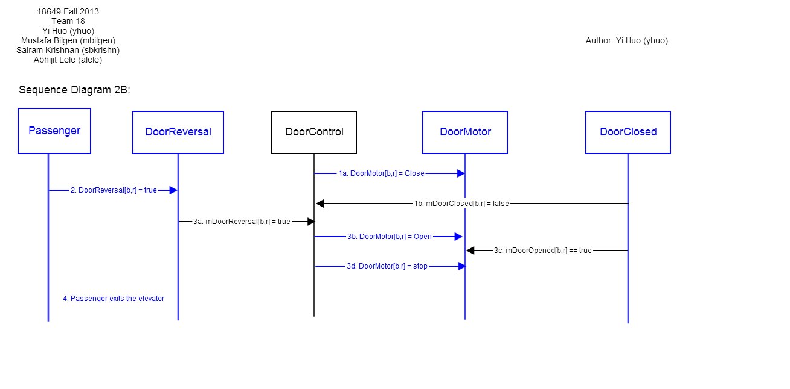

18-649 Scenarios and Sequence Diagrams
18649 Fall 2013
Group 18 - Sairam Krishnan (sbkrishn), Yi Huo (yhuo), Yigit
Bilgen (ybilgen), Abhijit Lele (alele)
Scenarios:
- 1. Passenger Makes a Hall Call
- 2. Passenger Makes a Car Call
- 3. Passenger Enters Car - R-T8.1
- 4. Passenger Exits Car - R-T8.1
- 5. Passenger Triggers Door Reversal
- Scenario 5A - R-T10
- Scenario 5B - R-T10
- 6. Determine Car Position - R-T9
- 7. Determine Car Direction
- Scenario 7A - R-T7, R-T8.2
- Scenario 7B - R-T7, R-T8.2
- Scenario 7C
- 8. Move Car to Next Floor
- Scenario 8A
- Scenario 8B - R-T6, R-T8.3
- 9. Cycle Doors
- 10. Elevator Powers Up.
- 11. Elevator Stuck Between Floors.
- 12. Overweight Car
Use Case 1: Passenger Makes A Hall Call
Scenario 1A: Passenger arrives at a hallway while elevator is elsewhere.
Pre-Conditions:
- All doors are closed.
- Passenger has already arrived at a hallway to use the elevator.
- Car is at another floor.
Scenario:
- Passenger pushes hall call (up or down) button for passenger's desired direction d.
- Passenger sees that corresponding hall button light turns on.
Post-Conditions:
- Elevator has not yet arrived at the passenger's floor.
- All doors are closed.
- Hall button light for passenger's desired direction is on.
Sequence Diagram:

Scenario 1B: Passenger arrives at a hallway when elevator is already there and the car is traveling in the same direction as desired by passenger.
Pre-Conditions:
- Car is at same floor as passenger.
- Car is traveling in same direction d as desired by passenger.
- At least one door[b,r] is open.
- Hall button light [f,b,d] for passenger's desired direction is off.
Scenario:
- Door[b,r] starts closing.
- Passenger arrives at a hallway [f, b] to use the elevator, with intent to travel in direction d.
- Passenger presses hall call button before doors are fully closed, but after doors are too fully closed for passenger to enter.
- Hall button lights up.
- Doors complete closing.
Post-Conditions:
- Elevator is at the passenger's floor.
- Door is closed.
- Hall button light for passenger's desired direction is on.
Sequence Diagram:

Scenario 1C: Passenger arrives at a hallway when elevator is already there and the car is traveling in opposite direction as desired by passenger.
Pre-Conditions:
- Car is at same floor f as passenger.
- Car is traveling in opposite direction ~d than direction d desired by passenger.
- At least one Door[b,r] is open.
- Hall button light for passenger's desired direction is off.
Scenario:
- Door[b,r] starts closing.
- Passenger arrives at a hallway [f,b] to use the elevator going in direction d.
- Passenger presses hall call button before doors are fully closed, but after doors are too fully closed for passenger to enter.
- Hall button lights up.
- Doors complete closing.
Post-Conditions:
- Elevator is at the passenger's floor.
- All doors are closed.
- Hall button light for passenger's desired direction is on.
Sequence Diagram:

Use Case 2: Passenger Makes A Car Call
Scenario 2A: Passenger is in the car and elevator is not at the desired destination floor.
Author name: Yi Huo
Pre-Conditions:
- Car is at floor f, with at least one Door[b,r] open.
- Passenger is in the car and elevator is not at the desired destination [g,c], where f != g. Also, b might or might not be equal to c.
- Car call button for the desired destination is not lit.
Scenario:
- Passenger presses CarCall[g, c] for the desired floor f.
- CarLight[g, c] lights up.
- Door[b,r] starts closing.
- Doors complete closing.
Post-Conditions:
- Elevator is at the floor f.
- All doors are closed.
Sequence Diagram:
{kind=link}
Scenario 2B: Passenger is in the car and the elevator has arrived at the passenger's desired floor, but passenger has not yet exited the car as the doors begin to close.
Author name: Yi Huo
Pre-Conditions:
- Passenger is in the car.
- Elevator has arrived at the desired hallway, but the passenger has not yet exited the car.
- At least one door[b,r] is open.
Scenario:
- Elevator door/doors start to close.
- Passenger tries to step out.
- The elevator door reversal gets triggered and the door open completely.
- Passenger exits elevator.
Post-Conditions:
- The elevator doors are completely open.
- Passenger is no longer in the elevator.
Sequence Diagram:
{kind=link}
Use Case 3: Passenger Enters Elevator
Scenario 3A: Passenger is waiting at a hallway for the elevator and has already pressed the hall call button.
Author name: Yi Huo
Pre-Conditions:
- Car is about to arrive at a hallway [f,b] at which passenger is waiting.
- The hall call button for passenger's desired direction d has already been pressed
- The elevator is going in direction d.
- Passenger is outside the car.
- All doors are closed.
Scenario:
- The elevator comes to a complete stop at floor f.
- The elevator doors open completely and the car lantern displays the direction that the elevator is traveling.
- The passenger steps into the elevator.
- The elevator doors start to close.
Post-Conditions:
- The elevator doors are closing.
- The passenger is in the elevator.
Sequence Diagram:
{kind=link}
Use Case 4: Passenger Exits Elevator
Scenario 4A: Passenger is in the elevator as it arrives at the passenger's desired hallway.
Author name: Abhijit Lele
Pre-Conditions:
- Passenger is inside the car, traveling to desired floor f and hallway b.
- Car is traveling in direction d
- All doors are closed.
Scenario:
- The Elevator is traveling in the desired direction and arrives at the passenger desired floor 'f'.
- The doors of the elevator open and the car lantern shows direction of the elevator's journey.
- The passenger stays in the elevator and the doors of the
elevator close.
Post-Conditions:
- The Carbutton is pressed for a different floor.
Sequence Diagram:
{kind=link}
Use Case 5: Passenger Triggers Door Reversal
Scenario 5A: Passenger attempts to enter the car as the doors begin to close.
Author name: Abhijit Lele,
Co-author name: Sairam Krishnan
Pre-Conditions:
- Passengers are outside the car.
- Car is stopped at passengers' floor f and hallway b.
- At least one Door[b,r] is open.
Scenario:
- First passenger tries to enter the elevator as Door[b,*] start closing.
- Door reversal is triggered, and Door[b,*] start opening.
- Door[b,*] are fully open, and the first passenger
enters the elevator.
- Second passenger tries to enter the elevator as Door[b,*] start closing again.
- Elevator commands Door[b,*] to nudge, and the second passenger enters the elevator.
Post-Conditions:
- The elevator doors are nudging.
Sequence Diagram:
{kind=link}
Scenario 5B: Passenger attempts to exit the car as the doors begin to close.
Author name: Abhijit Lele,
Co-author name: Sairam Krishnan
Pre-Conditions:
- Passenger is inside the car.
- Car is stopped at passenger's floor f and hallway b.
- At least one door[b,r] is open.
Scenario:
- Passenger attempts to exit elevator as Door[b,*] start closing.
- Door reversal is triggered, and Door[b,*] open completely.
- The passenger stays in the elevator, and Door[b,*]
close completely.
Post-Conditions:
- Doors are closed.
Sequence Diagram:
{kind=link}
Use Case 6: Determine Car Position
Scenario 6A: Car moves from hallway f on floor x to adjacent hallway g on floor y and stops.
Note: Recall that the Drive of the elevator we provided is never commanded to go Fast, so the elevator only moves Slow and can therefore stop right away when it sees the appropriate AtFloor[f, b](True). Your solution will probably involve the Drive going Fast for some portion of the trip, and the CarLevelPosition Sensor to plan when to slow down. You will be given information on how to design a Fast Drive in the upcoming projects. For Project 2, a Slow Drive will suffice.
Author name: Mustafa Bilgen,
Co-author name: Abhijit Lele
Pre-Conditions:
- Car is at hallway [f, x].
- All elevator doors are closed.
Scenario:
- The desired floor and hallway for the elevator is [g,y]
where (g-y>1)
- Elevator starts moving in the desired direction in slow speed.
- Elevator travels with a fast speed after traveling a distance of 'Xdist'
- Elevator goes back to slow speed after reaching the commit
point for the desired floor
- Elevator reaches the desired floor and hallway [g,y].
Post-Conditions:
- Car is at hallway[g, y].
- All elevator doors are closed and the elevator is stopped
- Doors of the elevator open.
Sequence Diagram:
{kind=link}
Use Case 7: Determine Car Direction
Scenario 7A: Elevator opens doors when Dispatcher's intended direction is Up or Down.
Author name: Sairam Krishnan (sbkrishn)
Pre-Conditions:
- Elevator is stopped at floor f, and AtFloor[f,b] was last received as True.
- Dispatcher intends direction d and is enabling pickup in hallway b.
- All doors are closed.
- Both Car Lanterns are off.
Scenario:
- Elevator starts to open Doors[b,*].
- Elevator turns on CarLantern[d].
- Elevator completes opening Doors[b,*].
- No passenger arrives, and the elevator closes Door[b,*] after waiting 10 seconds.
- Elevator turns off CarLantern[d].
Post-Conditions:
- All doors are closed.
- Both Car Lanterns are off.
Sequence Diagram:
{kind=link}
Scenario 7B: Elevator arrives at a hallway and the desired direction is Stop.
Author name: Sairam Krishnan (sbkrishn)
Pre-Conditions:
- Elevator is stopped at floor f, and AtFloor[f,b] was last received as True.
- Dispatcher intends direction Stop (i.e., no selected direction), with enabled pickup in hallway b.
- All doors are closed.
- Both Car Lanterns are off.
Scenario:
- Passenger arrives at hallway[f,b], intending to travel in direction d.
- Passenger presses a hall call button, HallCall[f,b,d], and the corresponding hall button light turn on.
- Elevator starts to open Doors[b,*] and turns on CarLantern[d].
- Elevator completes opening Doors[b,*].
- Elevator turns off the hall button light.
- Passenger boards the elevator.
- Elevator closes Doors[b,*].
- Elevator turns off CarLantern[d].
Post-Conditions:
- All doors are closed.
- Both Car Lanterns are off.
- All hall button lights are off.
Sequence Diagram:
{kind=link}
Scenario 7C: Elevator doors close on a hallway.
Author name: Sairam Krishnan (sbkrishn)
Pre-Conditions:
- At least one Door[b,r] is open.
Scenario:
- On hallway[f,b,r], the elevator has Door[b,*] open.
- No one boards the elevator.
- After waiting 10 seconds, the elevator closes Door[b,*].
Post-Conditions:
- All doors are closed.
Sequence Diagram:
{kind=link}
Use Case 8: Move Car to Next Floor
Scenario 8A: Elevator moves from {floor f, hallway b} to {floor g, hallway c} in direction d.
Note: You will want to create other scenarios that involve fast speed for your elevator, but this is a starting point.
Author name: Yigit Bilgen
Pre-Conditions:
- Elevator is at floor f, with at least one Door[b,r] open.
- Drive is stopped.
Scenario:
- Doors[b,r] start closing.
- Doors[b,r] close.
- CarLantern[d] is turned off.
- Elevator starts moving in direction d.
Post-Conditions:
- Car is moving in direction d.
- All elevator doors are closed.
Sequence Diagram:
{kind=link}
Scenario 8B: Elevator receives multiple hall calls/car calls.
Author name: Yi Huo
Pre-Conditions:
- Car moving in direction d to desired floor j.
- All doors are closed.
Scenario:
- HallCall[f,b,d] is true, where f < j.
- HallCall[g,b,u] is true, where g > j.
- Elevator arrives at desired floor j.
- Doors start to open.
- CarLantern[d] turns on.
Post-Conditions:
- Car is at hallway[f,b]
- Elevator doors are open.
- The elevator is stopped.
Sequence Diagram:
{kind=link}
Use Case 9: Cycle Doors
Scenario 9A: Elevator stops at hallway and doors open. Dispatcher computes next desired floor just as doors open. Doors close.
Note: This dispatcher is really dumb and stops at every floor, in order. It would be much better to stop only at floors with people on them or that people want to go to.
Author name: Yigit Bilgen
Pre-Conditions:
- Car is stopped.
- AtFloor[f,b] was last received as True.
- All doors are closed.
Scenario:
- HallCall and CarCall for 1st floor are True
- Doors[b,r] open.
- CarLantern[d] is turned on.
- Doors[b,r] close.
- CarLantern[d] is turned off.
Post-Conditions:
- Car is at hallway[f,b]
- All elevator doors are closed.
- The elevator is stopped.
Sequence Diagram:
{kind=link}
Use Case 10: Elevator powers up
Scenario 10A: Elevator starts up.
Author name: Yi Huo
Pre-Conditions:
- Car is stopped.
- Car is at floor 1.
- All doors are closed.
Scenario:
- Dispatcher sets dwell time
Post-Conditions:
- Car is at floor 1
- All elevator doors are closed.
- The elevator is stopped.
Sequence Diagram:
{kind=link}
Use Case 11: Elevator Stuck
Scenario 11A: Elevator is in between floors, with doors open. Elevator moves to the first floor.
Note: Under normal operation, this shouldn't happen.
Author name: Yigit Bilgen
Pre-Conditions:
- All mAtFloor[f,b] was last received as False.
- At least one mDoorClosed[b,r] is False.
Scenario:
- Dispatcher commands the elevator to the lobby.
Post-Conditions:
- mDesiredFloor is set to {1, NONE, STOP}.
Sequence Diagram:
{kind=link}
Use Case 12: Overweight Car
Scenario 12: Passenger tries to enter a crowded Elevator
Author name: Abhijit Lele
Pre-Conditions:
- Car is stopped.
- Car is at floor 'f'
- All doors are open
Scenario:
- Passenger enters a crowded elevator.
- mCarWeight(x), where x is in kg, exceeds MaxCarCapacity.
- The elevator doors remain open.
Post-Conditions:
- The elevator stays on the same floor with doors open until car weight is less than max capacity
{kind=link}